UDN
Search public documentation:
CascadeUserGuideJP
English Translation
中国翻译
한국어
Interested in the Unreal Engine?
Visit the Unreal Technology site.
Looking for jobs and company info?
Check out the Epic games site.
Questions about support via UDN?
Contact the UDN Staff
中国翻译
한국어
Interested in the Unreal Engine?
Visit the Unreal Technology site.
Looking for jobs and company info?
Check out the Epic games site.
Questions about support via UDN?
Contact the UDN Staff
Unreal Cascade ユーザーガイド
ドキュメントの概要: Unreal Cascade (パーティクルベースのエフェクトシステム) の使用ガイド。 ドキュメントの変更ログ: Alan Willard により作成。 Joe Graf により Wiki ページ作成。 Richard Nalezynski? により管理。はじめに
Cascade (カスケード) とは、Unreal Engine でエミッタを用いてパーティクルベースのエフェクトを作成するためのツールです。Cascade の使用
Cascade を開く
Cascade の概要
Cascade のレイアウト
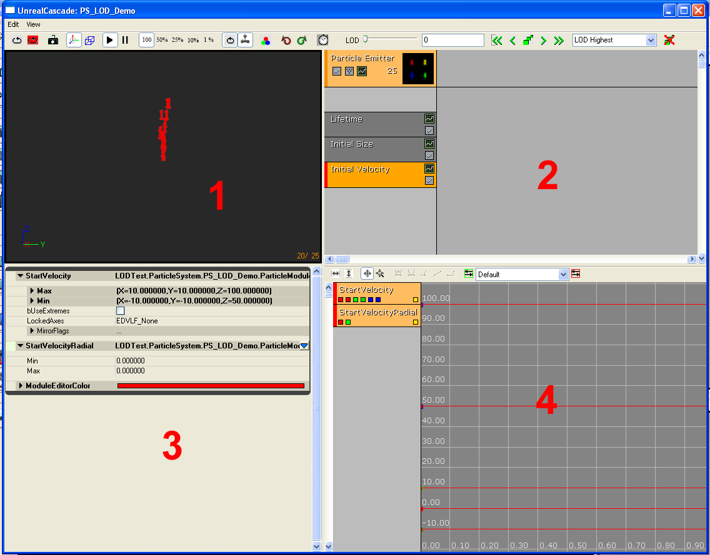
Cascade は 4 つのウィンドウで構成されています。| 1 | メニューバー? と ツールバー? | 可視化およびナビゲーションツール。 |
| 2 | プレビュー ペイン? | 現在のパーティクル システムを (そのシステム内にあるすべてのエミッタを含めて) 表示します。 [Sim] (シミュレーション) ツールバーのオプションを使い、シミュレーション速度を設定します。 |
| 3 | エミッタリスト? | このペインには、現在のパーティクル システム内にあるすべてのエミッタのリストと、各エミッタ内のすべてのモジュールのリストがあります。 |
| 4 | プロパティペイン? | このペインの内容は、選択項目に応じて異なります。システムが選択されていない場合ペインは空白で、エミッタ (モジュールではない) が選択されている場合はそのエミッタのグローバル プロパティと、 SpawnRate のプロパティが表示されます。 |
| 5 | グラフ? | このグラフ エディタには、相対または絶対時間で変化するプロパティが表示されます。グラフエディタにはモジュールが追加されるので、表示コントロールがあります (このドキュメントの後半で説明します)。 |
メニュー バー
Edit (編集)
Regenerate lowest LOD (最低 LOD を再生成) Save Package (パッケージを保存)View (表示)
View Origin Axes (原点座標を表示) View Particle Counts (パーティクル数を表示) View Particle Times (パーティクルのタイムラインを表示) View Particle Distance (パーティクルの距離を表示) View Geometry (ジオメトリを表示) View Geometry Properties (ジオメトリのプロパティを表示) Save Cam Position (カム位置を保存)Window (ウィンドウ)
Properties: (プロパティ) プロパティペインを表示します。 Unreal Curve Editor: (Unreal カーブ エディタ) カーブ エディタを表示します。 Preview: (プレビュー) プレビューペインを表示します。ツール バー
次図に示すようなツールバーがあります。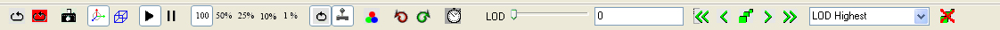
ツールバーには以下のコントロールがあります (ツールバーの左から):| アイコン | 名前 | 説明 |
|---|---|---|
| Restart Sim (シミュレーションを再開) | プレビュー ウィンドウのシミュレーションをリセットします。 | |
| Restart in Level (レベル ビューポートで再開) | レベル内のパーティクル システムと、システムのインスタンスがあればそれもリセットします。 | |
| Save Thumbnail Image (サムネイル画像を保存) | 現在の回転/オフセットをサムネイルの設定として保存します。 | |
| Toggle Orbit Mode (カメラの軌道モードをトグル) | プレビュービューポートのカメラのモード (パーティクル システムを周回、自由移動) を切り替えます。 | |
| Toggle Wireframe (ワイヤーフレーム表示をトグル) | プレビュービューポートで、ワイヤーフレームにパーティクルをレンダリングするかどうかを切り替えます。 | |
| Toggle Bounds (バウンダリの表示をトグル) | ||
| Toggle PostProcess (ポスト処理エフェクトの表示をトグル) | ||
| Toggle Grid (グリッド表示をトグル) | ||
| Play (再生) | プレビュービューポートでシミュレーションを再生します。 | |
| Pause (一時停止) | シミュレーションを停止します。 | |
| 100% | シミュレーションを 100 % の速度で実行します。 | |
| 50% | シミュレーションを半分の速度で実行します。 | |
| 25% | シミュレーションを 1/4 の速度で実行します。 | |
| 10% | シミュレーションを 1/10 の速度で実行します。 | |
| 1% | シミュレーションを 1/100 の速度で実行します。 | |
| Toggle Loop System (ループ再生モードをトグル) | ループ再生が設定されていないエミッタでも、これによりプレビュービューポートでループ再生されます。 | |
| Toggle Realtime (リアルタイム更新をトグル) | プレビュービューポートでエミッタをリアルタイムでプレビューできるようにします。 | |
| Background Color (背景色) | ここでビューポートの背景色を変更できます。 | |
| Toggle Wireframe Sphere (ワイヤーフレーム球の表示をトグル) | ||
| Undo (元に戻す) | 最後に行った操作を取り消します。 | |
| Redo (やり直し) | 最後に取り消した操作をやり直します。 | |
| Performance Check (パフォーマンス チェック) | 現在は未使用。 | |
| LOD Slider (LOD スライダ) | 現在は未使用。 | |
| Jump to Highest LOD Level (最高 LOD にジャンプ) | 現在は未使用。 | |
| Jump to Higher LOD Level (次に高い LOD にジャンプ) | 現在は未使用。 | |
| Add LOD (Lod を追加) | 現在は未使用。 | |
| Jump to Lower LOD Level (次に低い LOD にジャンプ) | 現在は未使用。 | |
| Jump to Lowest LOD Level (最低 LOD レベルにジャンプ ) | 現在は未使用。 | |
| LOD Selector (LOD を選択) | 現在は未使用。 | |
| Regenerate lowest LOD (最低 LOD を再生成) | 現在は未使用。 | |
| Regenerate lowest LOD duplicating highest (最低 LOD を再生成 (最高 LOD を複製)) | 現在は未使用。 | |
| Delete LOD (Lod を削除) | 現在は未使用。 |
エミッタ リスト
EmitterEd ビューポートにエミッタが描かれると、EmitterEd ウィンドウ (#2) にはモジュールの列が含まれ、システムにパーティクルエミッタが 1 つ含まれていることを意味します。各列はエミッタブロックと、それに続く任意の数のモジュールブロックで構成されます。 次図はエミッタブロックです。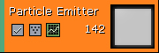
エミッタブロックの上には以下のボタンが表示されます (左から右に)。 /
/  このボタンはエミッタを有効/無効にします。エミッタが有効のときは最初の画像、無効のときには 2 番目の画像が表示されます。無効にしたエミッタ上では Tick または Render も呼び出されない点に注意してください。
真ん中のボタンはエミッタのレンダリングモードで、クリックすると次に使用可能なレンダリングモードに替わります。以下のアイコンがサポートされています。
このボタンはエミッタを有効/無効にします。エミッタが有効のときは最初の画像、無効のときには 2 番目の画像が表示されます。無効にしたエミッタ上では Tick または Render も呼び出されない点に注意してください。
真ん中のボタンはエミッタのレンダリングモードで、クリックすると次に使用可能なレンダリングモードに替わります。以下のアイコンがサポートされています。
 | エミッタは通常どおりにレンダリングされます。 |
 | エミッタはパーティクルの位置に十字をレンダリングします。 |
| エミッタはパーティクルの位置に点をレンダリングします。 | |
 | エミッタは何もレンダリングしません。 |
 このボタンは関連エミッタ プロパティをカーブ エディタ ウィンドウ (#4) に送信します。
エミッタの各モジュールはエミッタブロックの下に一列に現れます。次図は Cascade におけるモジュールの画像です。
このボタンは関連エミッタ プロパティをカーブ エディタ ウィンドウ (#4) に送信します。
エミッタの各モジュールはエミッタブロックの下に一列に現れます。次図は Cascade におけるモジュールの画像です。
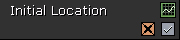
右上のアイコンは関連モジュールデータをカーブ エディタに送信するボタンです。右下のアイコンはモジュールを有効/無効にするボタンです。(注意: 2 つのエミッタで共有されているモジュールを無効にすると、すべてのエミッタ上で無効になります。) 最後のボタンは、プレビュービューポートで 3D 表現のレンダリングが可能なモジュール上にのみ現われます。 /
左の画像は 3D プレビュー が描かれることを意味します。右のは現在無効になっていることを意味します。
カーブ エディタ
グラフへのモジュール追加
グラフエディタにモジュールを追加する作業はとても簡単で、モジュールの左側にグリーンのボックスが現れると、そのモジュールがグラフエディタに追加されます。グラフエディタに現れるモジュールの色は、モジュールの作成時に決められます。これを変更するには、変更したいモジュールのプロパティウィンドウで [Cascade] プロパティセット開き、そこで色を変更します。グラフの操作
グラフエディタで項目の右側に現れるイエローのボックスは、そのモジュールのスプライン表示を切り替えます。これらの項目を 1 つ右クリックして、グラフから消去することができます。グラフ上の点の作成
複数点などを追加する前に、編集対象の Distribution (分布) が 'カーブ' タイプ (つまり DistributionFloatConstantCurve) であることを確認してください。 グラフエディタで点を作成するには、目的の値に対するスプラインを Ctrl+ 左クリックします。一番簡単な方法は、前述のチェックボックスを使い他のモジュールをすべてオフにすることです。すべてのモジュールは、時間 0 の単一キーとしてゼロの位置から開始します。タイムライン内でスプラインの任意の位置を Ctrl+ 左クリックすると、そこに点が作成されます。この点は自由自在にドラッグできますが、既に述べたようにスプラインがベクトル (XYZ) を表す場合は、そのベクトルの 3 つのキーすべての時間が移動するのに対し、値は変動しません。 キーポイントを右クリックするとメニューが表示され、そこでキーポイントの時間と値を手動で入力することができます。キーがカラーカーブ内にある場合は、カラーピッカーを使って色を選択できます。 モジュールが ColorOverLife の場合、描かれるスプラインはその時点の色を反映しますが、点はそのスプラインの特定のチャネルを反映する色で描かれます。 ColorOverLife に関するもう 1 つの違いは、値はすべて 255 以内に制限されるので、その値ラインの上に点をドラッグできないことです。 詳細は カーブ エディタ ユーザーガイド? ページを参照してください。
詳細は カーブ エディタ ユーザーガイド? ページを参照してください。
コントロール
マウス コントロール
Cascade の移動コントロールは以下のとおりです。 プレビューペインでは、左マウスボタンでシーンをパーティクルシステムの中心のまわりに回転、右マウスボタンでズームインとズームアウトを行います。 エミッタペインでは、エミッタまたはモジュールを左クリックしてエミッタを選択します。モジュールを左クリックしてドラッグし、下にエミッタがある任意の位置に移動してドロップします。この方法で、モジュールをスタック内で上または下方向にドラッグしたり、別のエミッタにドラッグできます。右クリックするとそのコンテキストに合わせて、エミッタの新規作成 (空のスペースをクリック)、モジュールの新規作成 (エミッタ内で空のスペースをクリック)、モジュールの削除 (モジュール名をクリック)、エミッタ全体を削除 (上部のメインエミッタモジュールをクリック) を行うためのダイアログが開きます。 モジュールを Shift+ 左クリックするとエミッタ間にインスタンスが作成されます。このモジュールインスタンスは名前の横の + 記号で示され、2 つのモジュールは同じ色を共有します。 モジュールを Ctrl+ 左クリックしてドラッグすると、コピー元からターゲットエミッタにコピーが作成されます。 ミドルボタンをクリックしてドラッグすると、エミッタペイン内でモジュールをパン (移動) します。 エミッタペインでエミッタを選択して、左/右の矢印キーを使い、パーティクル システム全体におけるエミッタの順位を変更します。パーティクルシステムによりエミッタが更新され、Cascade に現れる順に (左から右) レンダリングされます。 プロパティペインで左クリックすると、フィールドが選択されるか、またはプロパティのロールアウトが展開します。 グラフビューのコントロールは、作業中のモードによって変化します。グラフビューには以下の 2 つの操作モードがあります。 パンニングモード: 左クリックしてドラッグするとビューが自在に移動します。マウスホィールを使うと一定の率でズームイン/アウトします。 ズームモード: 左クリックしてドラッグするとグラフが垂直方向にスケーリングされ、右クリックしてドラッグすると水平方向にスケーリングされます。 スプラインが既にグラフ内にある場合、そのスプラインの任意の位置を左クリックすると、クリックした位置にキーが作成されます。キーを左クリックしてドラッグし、移動することができます。ただし、グラフ上に複数の値を持つモジュール (Color Over Lifetime の RGB など) では、キーが作成されるたびにそのモジュールの他のスプラインにも追加され、これらのキーは常に他のキーと同じ時間に保たれるので、例えば Red のキーの時間を前または後に移動すると、Green と Blue のキーも同様に横方向に移動することになります (縦方向には移動しません)。 グラフビューの他の 2 つのボタンは Fit (フィット) ボタンで、左側のボタンは、現在表示されているスプラインの水平方向の範囲にビューをズームまたはパンニングし、右側のボタンは垂直軸上で同じ動作を行います。エミッタに関する作業
パーティクルシステムの作成
Unreal Engine 3 でパーティクルシステムを作成するには、Generic ブラウザを開いて [File] (ファイル) >[New] ）(新規作成) の順に開き、ダイアログボックスの下にあるドロップダウンから [Particle System] を選択するか、または Generic ブラウザの空のスペースを右クリックし、コンテキスト メニューから [New Particle System] (新しいパーティクルシステム) を選択します。いずれの方法でも、パッケージ、グループおよび名前の入力を求められます。適切なデータを入力すると、新しいパーティクルシステムが Generic ブラウザに白い輪郭で囲まれて表れます。スプライトエミッタの作成
Cascade 内部にエミッタを作成する作業は非常に簡単で、Cascade のエミッタ リストを右クリックして [New Sprite Emitter] (新しいスプライトエミッタ) を選択するだけです。Lifetime (存続期間) と Initial Size (初期サイズ) モジュールを伴うエミッタが作成されます (現在これらのモジュールには有用なデフォルト設定が含まれていません。これは将来変更される予定です)。 [Lifetime] を 1 (Min/Max) に、[Size] の X、Y、Z の Min/Max をそれぞれ 30 に設定します。これでパーティクルに有効なレンダリング設定が与えられます。基本的なエミッタ オプション
エミッタブロックを右クリックすると、以下のオプションのメニューが表示されます。 Rename Emitter (エミッタの名前を変更) - エミッタの名前を変更します (別の方法として、グローバル 設定の EmitterName に進み、新しい名前を入力して変更することもできます)。 Duplicate Emitter (エミッタを複製) - パーティクルシステム内のエミッタを複製します。 Duplicate + Share Emitter (エミッタを複製して共有) - パーティクルシステム内のエミッタを複製し、複製元のエミッタと複製したエミッタ間ですべてのモジュールを共有します。 Delete Emitter (エミッタを削除) - エミッタを削除します (別の方法は、エミッタを選択して Delete キーを押します)。 Export Emitter (エミッタをエクスポート) - エミッタを現在の Cascade ウィンドウから Generic ブラウザで選択されているパーティクルシステムにエクスポートします。(エクスポートしたいエミッタを含むパーティクルシステムを開き、Generic ブラウザに移動して目的のターゲットパーティクルシステムを選択し、Cascade ウィンドウに戻って [Export Emitter] を選択します。)モジュールの作成
モジュールの作成は、エミッタの作成とほぼ同じ手順で行います。追加先のエミッタの下にある空白スペースを右クリックし、表示されるドロップダウンリストから目的のモジュールを選択します。エミッタのコピー
コピーしたいエミッタを含むパーティクルシステムを開き、Generic ブラウザでコピー先になるパーティクルシステムを選択し、コピーするエミッタを右クリックして [Emitter] >[Export Emitter] を選択します。別のパーティクルシステムにエミッタのコピーが作成されます。モジュール
モジュールについて
時系列で変化する分布タイプにプロパティを変更した場合、モジュールによって「相対時間」を用いるものと、「絶対時間」を用いるものがあります (分布については下記を参照)。- 基本的に、絶対時間は含まれているエミッタの時間です。エミッタに 2 秒のループが 3 回設定されている場合、そのエミッタ内のモジュールには、絶対時間が 0 から 2 秒まで 3 回実行されます。
- 相対時間は、各パーティクルの存続期間を示す 0 から 1 までの時間です。
モジュールの相互作用
エミッタ内の各モジュールは、スタックにおけるそれぞれの位置に基づいて他のモジュールと相互に作用します。例えば、Min(x=2, y=2, x=2)、Max(x=-2, y=-2, z=-2) の Initial Location (初期位置) にエミッタを作成し、非常に小さなボックスの中にパーティクルをスポーンさせます。次に、StartVelocityRadial を用いて Initial Velocity (初期速度) を Min、Max いずれも 100 に設定すると、このパーティクルはボックスの中心から離れて移動します。別の Initial Location を追加し、その Max と Min 値の X、Y、Z を 100 とすると、エミッタ全体を全方向に 100 ユニット移動しますが、新たに作成されたボックスの中心から離れて移動するというパーティクルの動作は変わりません。2 番目の Initial Location モジュールを Initial Velocity モジュールの上に移動すると、パーティクルは中央から外れたボックス位置ではなく、システムの原点から離れて移動します。Distribution (分布) のタイプ
詳細については パーティクル リファレンス ページを参照してください。パーティクルシステムのディテールレベル (LOD)
UnrealEngine3 のパーティクルシステムでも、ディテールレベルのサポートを提供するようになりました。このドキュメントでは、パーティクルシステムにおける LOD レベルの作成と、ゲーム中の用法を取り上げて説明します。Cascade LOD コントロール
次図の Cascade (カスケード) ツールバーセクションに LOD コントロールが含まれています。 Cascade LOD コントロール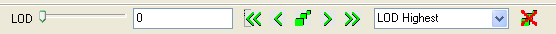
各コントロールの説明は以下のとおりです。 LOD スライダコントロール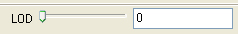
上図の LOD スライダは、既存の LOD レベル間で リアルタイム 補間を行うのに使います。最高 LOD レベルは LOD 設定値 0、最低レベルは 100 として表されます。スライダバーを移動するか、またはテキスト編集フィールドに値を入力すると、リアルタイムのプレビュー ウィンドウに異なるレベルが適用されます。 2 つの静的 LOD レベルの間の値が選択された場合、エディタはその値に最も近い 2 つのレベル間で補間を行います。この静的レベルをプレビューし、システムに追加できる見込みがあるかどうか検討することができます。 Jump to Highest LOD ボタン [Jump to Highest LOD] ボタンを押すと、システムは使用可能な最高静的 LOD に設定されます。 Jump to Higher LOD ボタン [Jump to Higher LOD] ボタンを押すと、現在の LOD 設定の次に高い使用可能な静的 LOD に設定されます。 Add LOD ボタン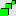
[Add LOD] ボタンを押すと、スライダバーの現在のレベル設定位置に新しい静的 LOD レベルを挿入します。 Jump to Lower LOD ボタン [Jump to Lower LOD] ボタンを押すと、現在の LOD 設定の次に低い使用可能な静的 LOD に設定されます。 Jump to Lowest LOD ボタン [Jump to Lowest LOD] ボタンを押すと、システムは使用可能な最低静的 LOD に設定されます。 LOD コンボ選択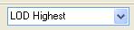
LOD コンボ選択ボタンを使うと、既存の静的 LOD レベルを任意に選択できます。 Regen Lowest LOD ボタン [Delete LOD] ボタンを押すと、現在選択されている静的 LOD レベルがパーティクル システムから削除されます。
[Delete LOD] ボタンを押すと、現在選択されている静的 LOD レベルがパーティクル システムから削除されます。
パーティクルシステムにおける LOD レベルの作成
このセクションでは、LOD の完全サポートを備えたパーティクルシステム作成を目指して設計されたザインフローについて議論します。 最高 LOD レベルは、全体的にみて望ましいエフェクトのレイアウトに使用します。最高 LOD レベルでの編集作業中は、モジュールの追加/削除しかできない点に注意してください。この例ではサブ UV エミッタを 1 つ作成し、*1* というテクスチャフレームを赤く表示します。 SubImage Index モジュールを使い、定数インデックスを 0 に設定すると、次図のスクリーンショットのようなシステムが生成されます。 Highest LOD Level (最高 LOD レベルにジャンプ) パーティクルとしては大きなサイズが選択されているので、画像が多少ぼやけていますが、これはゲーム中に発生する LOD レベルの選択について説明するためです。
デザイナーがパーティクルシステムの LOD 作成準備ができたと判断した時点で、 [Edit] メニューから [Regenerate Lowest LOD] を選択するようにしてください。これにより、最低 LOD レベルが再生成されます (同時に、作成されていた静的 LOD レベルが削除されます)。現在のところ、このメニュー項目は最高 LOD レベルの複製を作成し、そのスポーンレートを下げるだけですが、社内チームからのフィードバックを集めてから、共通モジュールの適切な生成ルーチンを実装する予定です。
最低 LOD レベルを選択してから、適切な外観を得るために値の調整を開始します。ここで注意しなければならないのは、デフォルトでは静的 LOD レベル内のすべてのモジュールが 編集不可能 であるとマークされている点です。これは、モジュール背景のマーブル模様により示されています (この背景テクスチャは変更可能です)。静的 LOD レベル内のモジュールを編集するには、これを有効にする必要があります。モジュール右クリックしてコンテキスト メニューから [Enable Module] (モジュールを有効にする) を選択します。
この例では、SubImage Index モジュールを編集するために有効にし、そのインデックスを 3 に設定します。この結果、下の図のようにエミッタには 4 がグリーンで表示されます。
Lowest LOD Level (最低 LOD レベルにジャンプ)
パーティクルとしては大きなサイズが選択されているので、画像が多少ぼやけていますが、これはゲーム中に発生する LOD レベルの選択について説明するためです。
デザイナーがパーティクルシステムの LOD 作成準備ができたと判断した時点で、 [Edit] メニューから [Regenerate Lowest LOD] を選択するようにしてください。これにより、最低 LOD レベルが再生成されます (同時に、作成されていた静的 LOD レベルが削除されます)。現在のところ、このメニュー項目は最高 LOD レベルの複製を作成し、そのスポーンレートを下げるだけですが、社内チームからのフィードバックを集めてから、共通モジュールの適切な生成ルーチンを実装する予定です。
最低 LOD レベルを選択してから、適切な外観を得るために値の調整を開始します。ここで注意しなければならないのは、デフォルトでは静的 LOD レベル内のすべてのモジュールが 編集不可能 であるとマークされている点です。これは、モジュール背景のマーブル模様により示されています (この背景テクスチャは変更可能です)。静的 LOD レベル内のモジュールを編集するには、これを有効にする必要があります。モジュール右クリックしてコンテキスト メニューから [Enable Module] (モジュールを有効にする) を選択します。
この例では、SubImage Index モジュールを編集するために有効にし、そのインデックスを 3 に設定します。この結果、下の図のようにエミッタには 4 がグリーンで表示されます。
Lowest LOD Level (最低 LOD レベルにジャンプ)
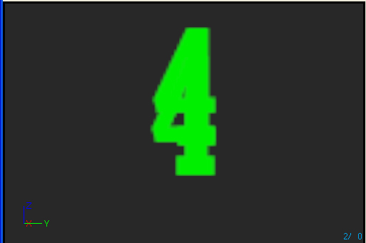
スポーンレートが最高 LOD レベルの 10% に自動的に設定されている点に注意してください。 次のステップでは、最高レベルと最低レベルの間の LOD 設定をスライダバーを使ってプレビューします。このケースでは、スライダ値に 33 を選択し、 [Add LOD] ボタンを押して静的 LOD レベルを追加します。 SubImage Index モジュールが有効になり、そのインデックスが 2 に設定されます。この結果、下の図のようにエミッタには 2 がイエローで表示されます。 LOD レベル 1 (設定 33)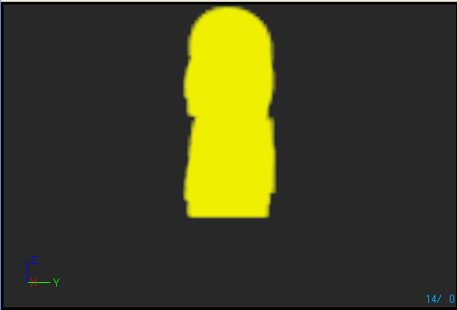
レベル設定 66 でも同じ手順を行います。SubImage Index が 3 に設定され、下の図のようにエミッタには 3 がブルーで表示されます。 LOD レベル 2 (設定 66)
LOD Method と Distance の設定
ゲーム中におけるパーティクルシステムの LOD の制御には 2 通りの方法があります。各パーティクルシステムには LODMethod と呼ばれる列挙体があり、LOD の制御方法を提供しています。 1 つ目の有効な値は Direct モードで、これは LODMethod プロパティの PARTICLESYSTEMLODMETHOD_DirectSet を選択することで指定します。このモードが選択されているときは、パーティクルシステムはそこで設定されている LOD レベルを使用します。これはゲーム時にスポーンされるエフェクト用のモードで、必要に応じて適切なレベルが設定されることを前提としています。 2 つ目の有効な値は Automatic モードで、これは LODMethod プロパティの PARTICLESYSTEMLODMETHOD_Automatic を選択することで指定します。このモードが選択されているときは、スポーン時と、ループエフェクトによりループ再生されるたびに使用する LOD レベルを決定します。レベルを決定するために、カメラからの距離を計算し、LODDistances 配列で適切なレベルを調べます。距離が配列内の項目に等しいか、またはそれより大きいレベルを選択します。 次の図はパーティクルシステムサンプルのプロパティウィンドウを示しています。 LODDistances プロパティウィンドウ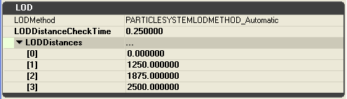
この例では、エミッタがカメラから [0..1249] ユニットの距離にある間は LOD 0 (最高レベル) が使用されます。 LOD 1 は [1250..1874]、LOD2 は [1875..2499]、LOD3 は距離が 2500 ユニットを超えたときです。 LODDistanceCheckTime では、Automatic モードに設定された各 ParticleSystemComponent が、実行時に LOD 判定のための距離チェックを実行する頻度を秒単位で設定します。この例では、レベル内のこのパーティクルシステムの各インスタンスは、1/10 秒ごとに距離チェックを実行します。